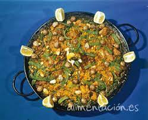

Paella: La comida de españa
A pagina de contactos
Que es la paella?
La paella es un plato originario de Valencia (España). Su ingrediente principal es el arroz, habitualmente acompañado por mariscos, pollo, legumbres y otros alimentos.
Es una especie de sartén de gran superficie, con dos o más asas pequeñas y poca profundidad.
Esta proporción permite que los ingredientes que en ella se preparan tengan una cocción adecuada. En ella se cocina el arroz a la paella, un platillo típico español con variaciones en las distintas regiones del país.

Necesidades para poder prepararla
Arroz
Sofrito
Mariscos
Tomate
Ingredientes adicionales de eleccion
VIDEO "
Como prepararla
Cocinar el Arroz
Preparar Los Mariscos
Mezclar el Sofrito y los tomates
Mezclar en un Vol y servir